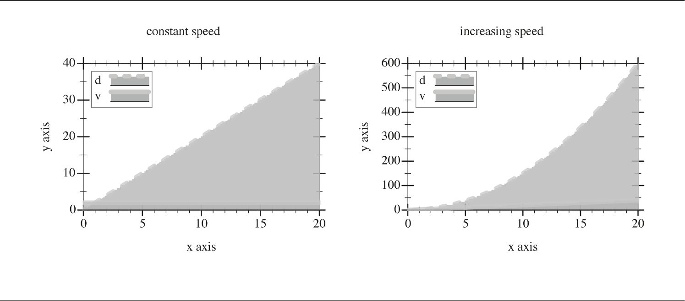
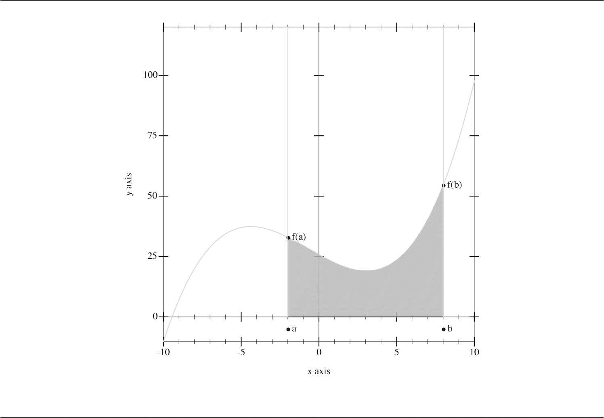
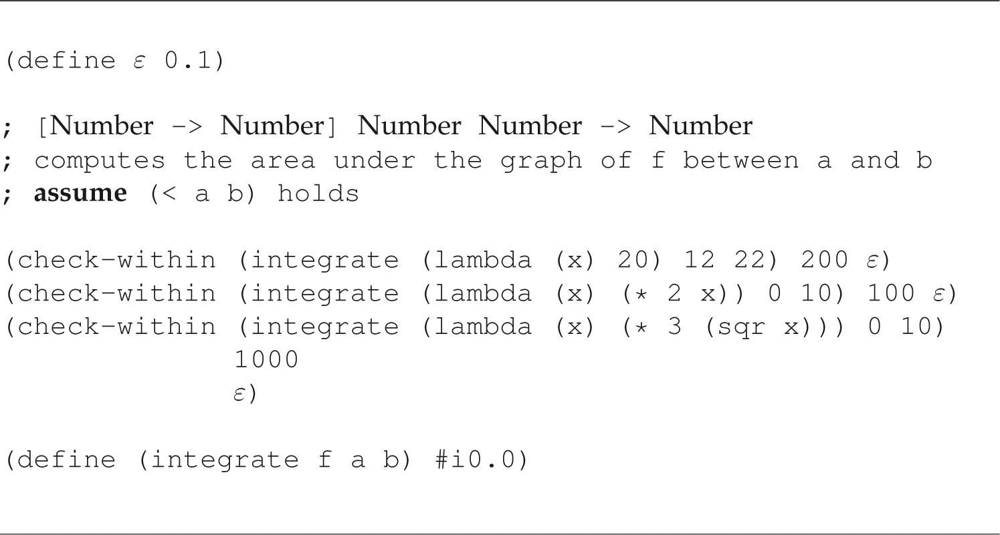
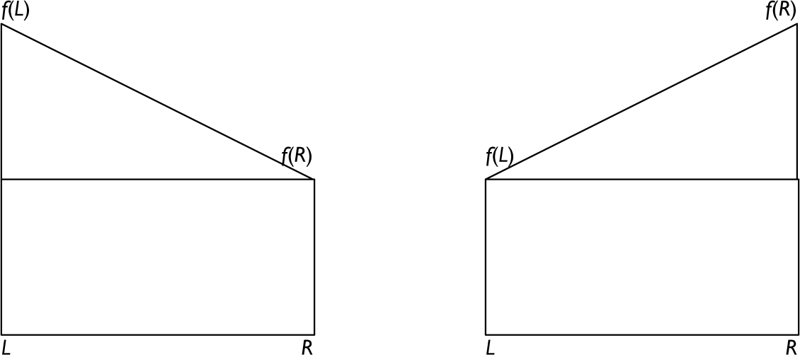
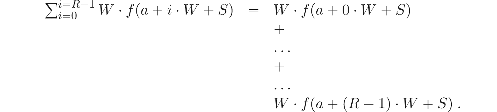
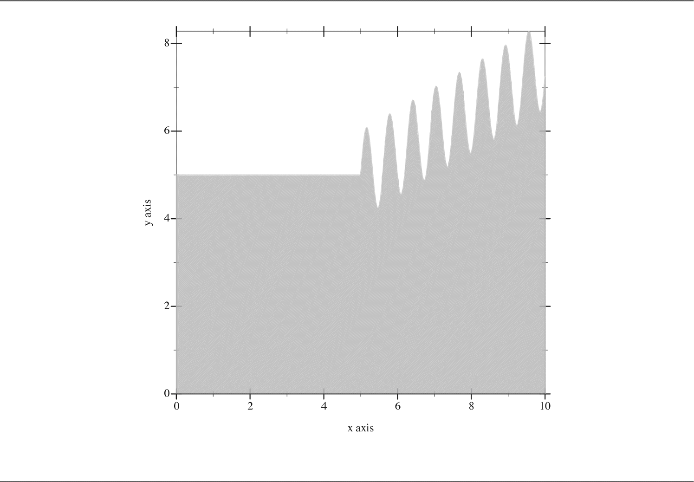

28.2 Numeric Integration
Many physics problems boil down to determining the area under a curve:
Sample Problem A car drives at a constant speed of v meters per second. How far does it travel in 5, 10, 15 seconds?
A rocket lifts off at the constant rate of acceleration of 12 m/s2. What height does it reach after 5, 10, 15 seconds?
Physics tells us that a vehicle travels dcon(t) = v ·t meters if it moves at a constant speed v for t seconds. For vehicles that accelerate, the distance traveled depends on the square of the time t passed:
In general, the law tells us that the distance corresponds to the area under the graph of speed v(t) over time t.
Figure 163 illustrates the idea in a graphical manner. On the left, we see an overlay of two graphs: the solid flat line is the speed of the vehicle and the rising dashed line is the distance traveled. A quick check shows that the latter is indeed the area determined by the former and the x-axis at every point in time. Similarly, the graphs on the right show the relationship between a rocket moving at constantly increasing speed and the height it reaches. Determining this area under the graph of a function for some specific interval is called (function) integration.

Figure 163: Distance traveled with constant vs accelerating speed
While mathematicians know formulas for the two sample problems that give precise answers, the general problem calls for computational solutions. The problem is that curves often come with complex shapes, more like those in figure 164, which suggests that someone needs to know the area between the x-axis, the vertical lines labeled a and b, and the graph of f. Applied mathematicians determine such areas in an approximate manner, summing the areas of many small geometric shapes. It is therefore natural to develop algorithms that deal with these calculations.

Figure 164: Integrating a function f between a and b
An integration algorithm consumes three inputs: the function f and two borders, a and b. The fourth part, the x-axis, is implied. This suggests the following signature:
; [Number -> Number] Number Number -> Number
In order to understand the idea behind integration, it is best to study simple examples such as a constant function or a linear one. Thus, consider
(define (constant x) 20)
Passing constant to integrate, together with 12 and 22, describes a rectangle of width 10 and height 20. The area of this rectangle is 200, meaning we get this test:
(check-expect (integrate constant 12 22) 200)
Similarly, let’s use linear to create a second test:
(define (linear x) (* 2 x))
If we use linear, 0, and 10 with integrate, the area is a triangle with a base width of 10 and a height of 20. Here is the example as a test:
(check-expect (integrate linear 0 10) 100)
After all, a triangle’s area is half of the product of its base width and height.
For a third example, we exploit some domain-specific knowledge. As mentioned, mathematicians know how to determine the area under some functions in a precise manner. For example, the area under the function
on the interval [a,b] can be calculated with the following formula
Here is how to turn this idea into a concrete test:
Figure 165 collects the result of the first three steps of the design recipe. The figure adds a purpose statement and an obvious assumption concerning the two interval boundaries. Instead of check-expect it uses check-within, which anticipates the numerical inaccuracies that come with computational approximations in such calculations. Analogously, the header of integrate specifies #i0.0 as the return result, signaling that the function is expected to return an inexact number.

Figure 165: A generic integration function
The following two exercises show how to turn domain knowledge into integration functions. Both functions compute rather crude approximations. While the design of the first uses only mathematical formulas, the second also exploits a bit of structural design ideas. Solving these exercises creates the necessary appreciation for the core of this section, which presents a generative-recursive integration algorithm.
The method is known as Kepler’s rule.
Exercise 458. Kepler suggested a simple integration method. To compute an estimate of the area under f between a and b, proceed as follows:
1. divide the interval into half at mid = (a + b)/2;
2. compute the areas of these two trapezoids:
• (a,0),(a,f (a)),(mid,0),(mid,f (mid))
• (mid,0),(mid,f (mid)),(b,0),(b,f (b));
3. then add the two areas.
Domain Knowledge Let’s take a look at these trapezoids. Here are the two possible shapes, with minimal annotations to reduce clutter:

The left shape assumes f (L) > f (R) while the right one shows the case where f (L) < f (R). Despite the asymmetry, it is still possible to calculate the area of these trapezoids with a single formula:
Stop! Convince yourself that this formula adds the area of the triangle to the area of the lower rectangle for the left trapezoid, while it subtracts the triangle from the area of the large rectangle for the right one.
Also show that the above formula is equal to
This is a mathematical validation of the asymmetry of the formula.
Design the function integrate-kepler. That is, turn the mathematical knowledge into an ISL+ function. Adapt the test cases from figure 165 to this use. Which of the three tests fails and by how much? 
Exercise 459. Another simple integration method divides the area into many small rectangles. Each rectangle has a fixed width and is as tall as the function graph in the middle of the rectangle. Adding up the areas of the rectangles produces an estimate of the area under the function’s graph.
Let’s use
to stand for the number of rectangles to be considered. Hence the width of each rectangle is
The height of one of these rectangles is the value of f at its midpoint. The first midpoint is clearly at a plus half of the width of the rectangle,
which means its area is
To compute the area of the second rectangle, we must add the width of one rectangle to the first midpoint:
For the third one, we get
In general, we can use the following formula for the ith rectangle:
The first rectangle has index 0, the last one R - 1.
Using these rectangles, we can now determine the area under the graph:

Turn the description of the process into an ISL+ function. Adapt the test cases from figure 165 to this case.
The more rectangles the algorithm uses, the closer its estimate is to the actual area. Make R a top-level constant and increase it by factors of 10 until the algorithm’s accuracy eliminates problems with an ε value of 0.1.
Decrease ε to 0.01 and increase R enough to eliminate any failing test cases again. Compare the result to exercise 458.
The Kepler method of exercise 458 immediately suggests a divide-and-conquer strategy like binary search introduced in chapter 27.2. Roughly speaking, the algorithm would split the interval into two pieces, recursively compute the area of each piece, and add the two results.
Exercise 460. Develop the algorithm integrate-dc, which integrates a function f between the boundaries a and b using a divide-and-conquer strategy. Use Kepler’s method when the interval is sufficiently small.
The divide-and-conquer approach of exercise 460 is wasteful. Consider a function whose graph is level in one part and rapidly changes in another; see figure 166 for a concrete example. For the level part on the graph, it is pointless to keep splitting the interval. It is just as easy to compute the trapezoid for the complete interval as for the two halves. For the “wavy” part, however, the algorithm must continue dividing the interval until the irregularities of the graph are reasonably small.

Figure 166: A candidate for adaptive integration
To discover when f is level, we can change the algorithm as follows. Instead of just testing how large the interval is, the new algorithm computes the area of three trapezoids: the given one and the two halves. If the difference between the two is less than the area of a small rectangle of height ε and width b − a,
it is safe to assume that the overall area is a good approximation. In other words, the algorithm determines whether f changes so much that it affects the error margin. If so, it continues with the divide-and-conquer approach; otherwise it stops and uses the Kepler approximation.
Exercise 461. Design integrate-adaptive. That is, turn the recursive process description into an ISL+ algorithm. Make sure to adapt the test cases from figure 165 to this use.
Do not discuss the termination of integrate-adaptive.
Does integrate-adaptive always compute a better answer than either integrate-kepler or integrate-rectangles? Which aspect is integrate-adaptive guaranteed to improve?
Terminology The algorithm is called adaptive integration because it automatically allocates time to those parts of the graph that need it and spends little time on the others. Specifically, for those parts of f that are level, it performs just a few calculations; for the other parts, it inspects small intervals to decrease the error margin. Computer science knows many adaptive algorithms, and integrate-adaptive is just one of them.